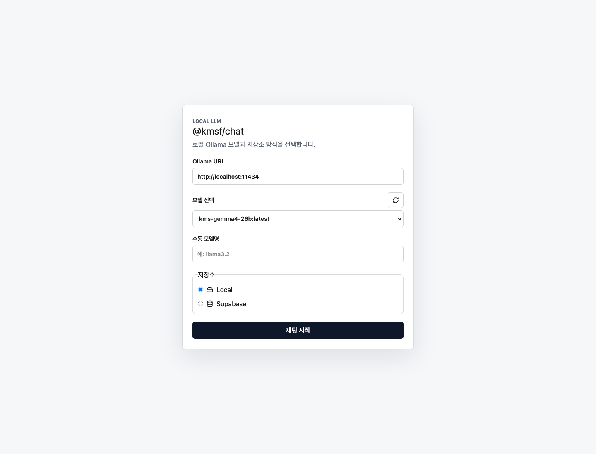
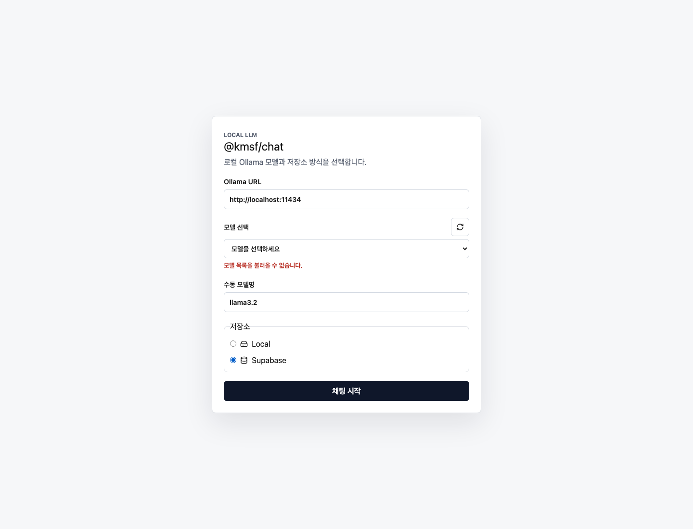
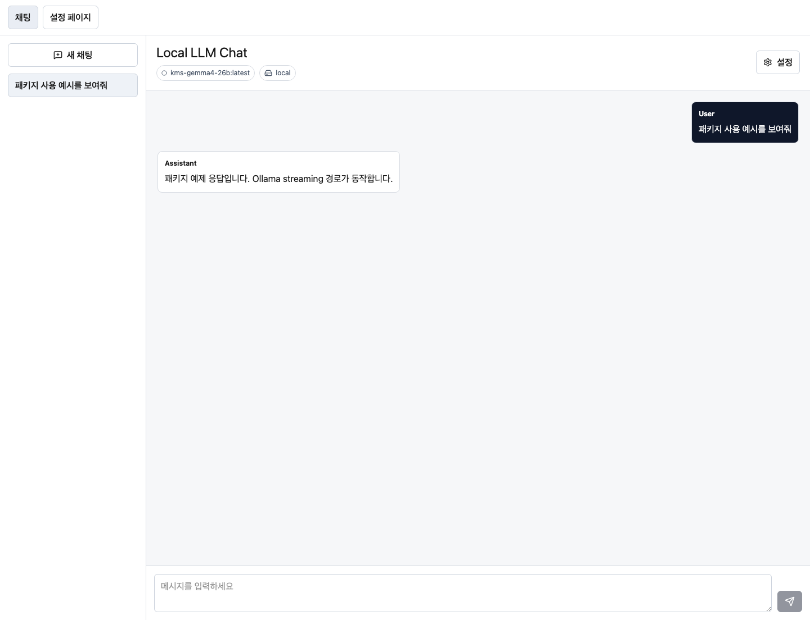
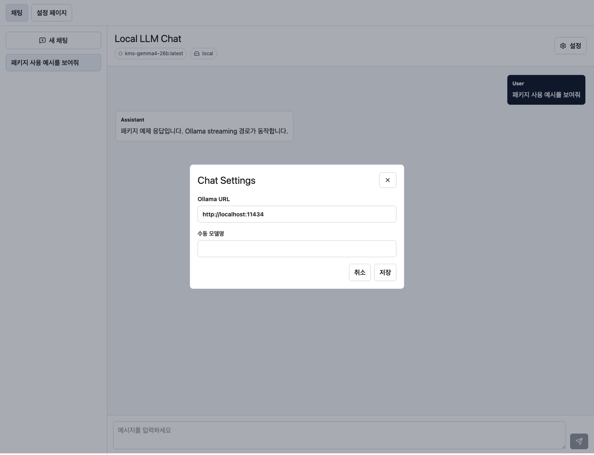
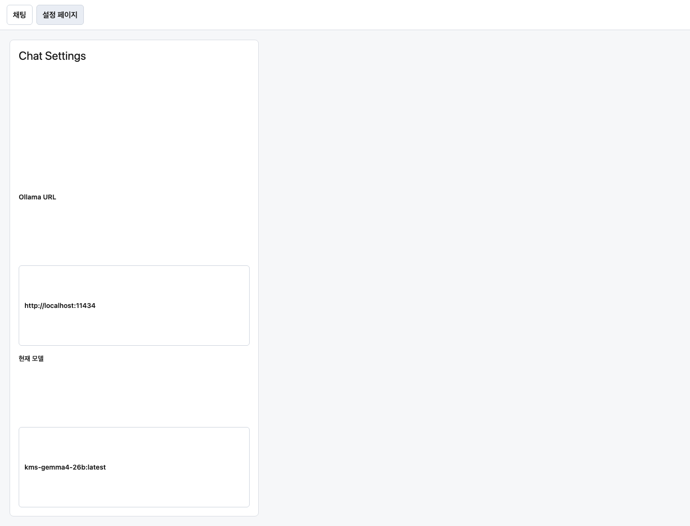

User Guide · 2026-06-18
@kmsf/chat 사용자 가이드
@kmsf/chat는 로컬 Ollama 모델을 사용하는 React 채팅 UI 패키지입니다.
초기 설정 화면, ChatGPT형 채팅 셸, 설정 다이얼로그, 설정 페이지, local storage adapter,
Supabase storage adapter를 패키지 경계 안에서 제공합니다.
이 문서는 현재 개발 완료 결과물을 기준으로 작성했습니다. 화면 캡처는
packages/chat/example Vite 예제와 mocked Ollama 응답으로 생성했으며,
live Ollama HTTP 검증은 별도로 수행됐습니다.
http://localhost:11434입니다.
빠른 시작
host app은 React와 React DOM을 peer dependency로 제공하고, 패키지 CSS를 한 번 import해야 합니다. package runtime은 Next.js 전용 API에 의존하지 않으므로 Vite, Next.js App Router, 일반 React host에서 adapter props를 통해 사용할 수 있습니다.
import {
ChatFloatingButton,
ChatSetupPage,
ChatShell,
createDefaultChatSetup,
createLocalChatStore,
createLocalSetupStore,
createOllamaClient,
markModelDiscoveryReady,
} from "@kmsf/chat";
import "@kmsf/chat/styles.css";selectedModel 또는 manualModelName이 있어야 전송할 수 있습니다.
이전에 저장된 사용자 선택은 복원할 수 있지만, 패키지 자체가 특정 모델을 기본값으로 고정하지 않습니다.
@kmsf/chat/styles.css로 유지됩니다.
패키지 내부 스타일은 src/styles/*.scss에서 토큰, 레이아웃, sidebar, composer, dialog, floating UI 단위로 관리되고 build 시 CSS로 컴파일됩니다.
초기 설정
초기 설정 화면은 Ollama URL, 모델 선택, 수동 모델명, 저장소 모드를 받습니다.
일반 흐름에서는 createOllamaClient().listModels()로 GET /api/tags를 호출해
설치된 모델 목록을 채웁니다.

모델 탐색이 실패하면 패키지는 사용자에게 수동 모델명을 입력할 수 있는 경로를 남깁니다. 이 fallback은 로컬 네트워크, Ollama CORS, host proxy 구성 차이 때문에 모델 목록 호출이 실패하는 환경을 고려한 흐름입니다.

GET /api/tags 실패 시에도 수동 모델명으로 setup을 완료할 수 있습니다.
Supabase 모드는 host가 client와 user identity를 제공한다는 전제가 필요합니다.
Host state 연결 예시
const setupStore = createLocalSetupStore({ storage: window.localStorage });
const initialSetup =
setupStore.tryLoad().item ?? { completed: false, settings: createDefaultChatSetup() };
async function refreshModels() {
const client = createOllamaClient({ baseUrl: setup.settings.baseUrl });
const result = await client.listModels();
if (result.ok) {
setModels(result.models.map((model) => model.name));
setSetup((current) => ({
...current,
settings: markModelDiscoveryReady(current.settings, new Date().toISOString()),
}));
return;
}
setModelError(result.error.message);
setSetup((current) => ({
...current,
settings: {
...current.settings,
manualModelEntryAllowed: true,
modelDiscoveryStatus: "error",
},
}));
}채팅 화면
ChatShell은 conversation sidebar, message list, composer, status bar, settings button을 포함합니다.
현재 구현은 prompt 전송 시 Ollama POST /api/chat streaming 응답을 받아 assistant message에 누적합니다.
기본 레이아웃은 좌측 채팅 목록과 하단 설정 진입점, 우측 활성 채팅 컨테이너를 사용합니다.

const chatStore = createLocalChatStore({ storage: window.localStorage });
<ChatShell
settings={setup.settings}
store={chatStore}
onSettingsChange={(nextSettings) => {
setSetup({ ...setup, settings: nextSettings });
setupStore.save({ ...setup, settings: nextSettings });
}}
/>Floating chatbot
ChatFloatingButton은 동일한 setup과 ChatHistoryStore 계약을 사용합니다.
Ollama setup에 effective model이 없으면 표시되지 않고, 열린 상태에서 다시 누르면 1회성 session을 닫으면서 저장합니다.
기본 채팅 화면의 토글로 버튼을 숨기거나 다시 표시할 수 있으며, 표시 상태와 드래그한 버튼 좌표는 package-scoped localStorage에 저장됩니다.
<ChatFloatingButton settings={setup.settings} store={chatStore} />설정 화면
설정은 두 가지 surface로 제공됩니다. ChatSettingsDialog는 채팅 중 빠른 변경에 적합하고,
ChatSettingsPage는 host app이 별도 설정 route나 admin/settings 화면에 끼워 넣기 위한 표면입니다.
Dialog의 저장 방식 옵션은 local, supabase, local-db를 제공하고,
Ollama URL 기준 모델 선택, 수동 모델명 fallback, Local DB endpoint/path 입력을 함께 처리합니다.


저장소 연동
Local storage
Local mode는 browser-compatible StorageLike를 사용합니다.
기본 키 prefix는 kmsf.chat이며, setup state와 chat store를 host가 명시적으로 연결합니다.
const setupStore = createLocalSetupStore({ storage: window.localStorage });
const chatStore = createLocalChatStore({ storage: window.localStorage });
패키지는 Ollama Desktop private history endpoint를 읽지 않습니다.
대화 목록과 메시지는 ChatHistoryStore를 통해 저장하며, KMSF app은 local DB-backed store를 host boundary에서 주입할 수 있습니다.
Local DB mode
local-db는 KMSF server/local DB 연결을 위한 host-injected mode입니다.
패키지는 apps/kmsf를 import하지 않고 동일한 ChatHistoryStore contract만 요구합니다.
설정에는 localDbType, localDbEndpoint, localDbPath를 저장할 수 있으며,
실제 API route, lowdb 또는 다른 local DB 연결은 consumer app 통합 범위에서 구현합니다.
Supabase storage
Supabase mode는 package-owned env reader나 service-role client를 만들지 않습니다. host가 이미 보유한 Supabase client와 현재 사용자 identity를 주입합니다.
const store = createSupabaseChatStore({
client: supabase,
user: {
id: appSessionUser.id,
email: appSessionUser.email,
displayName: appSessionUser.displayName,
},
});
패키지는 supabase/migrations/202606080001_kmsf_chat_history.sql을 제공합니다.
이 SQL은 consumer가 프로젝트 정책에 맞게 적용하거나 조정해야 합니다. 이번 패키지 close-out에서는 실제 Supabase 프로젝트 적용을
수행하지 않았고, migration contract test로 RLS, ownership policy, index 존재를 확인했습니다.
주요 API
| 분류 | Export | 용도 |
|---|---|---|
| UI | ChatSetupPage, ChatShell, ChatFloatingButton, ChatSettingsDialog, ChatSettingsPage |
초기 설정, 기본 채팅, floating chatbot, 빠른 설정, 별도 설정 페이지를 host app에 배치합니다. |
| Ollama | createOllamaClient |
GET /api/tags 모델 탐색과 POST /api/chat streaming 요청을 수행합니다. |
| Local | createLocalSetupStore, createLocalChatStore |
browser localStorage 또는 호환 storage로 setup과 대화 상태를 저장합니다. |
| Supabase | createSupabaseChatStore |
consumer-provided Supabase client와 user identity로 thread, message, settings를 저장합니다. |
| Core | createDefaultChatSetup, validateChatSetup, getEffectiveModel |
setup 기본값, 제출 가능 여부, effective model 계산을 host state와 테스트에서 재사용합니다. |
핵심 타입
type ChatStorageMode = "local" | "local-db" | "supabase";
interface ChatModelSettings {
baseUrl: string;
localDbEndpoint?: string;
localDbPath?: string;
localDbType?: "lowdb-json";
manualModelEntryAllowed: boolean;
manualModelName?: string;
modelConnectedAt?: string;
modelDiscoveryStatus: "idle" | "loading" | "ready" | "error";
provider: "ollama";
selectedModel: string | null;
storageMode: ChatStorageMode;
}
interface ChatHistoryStore {
deleteThread(threadId: string): void | Promise<unknown>;
deleteMessages(threadId: string): void | Promise<unknown>;
loadThreads(): StoreResult<ChatThread[]> | Promise<StoreResult<ChatThread[]>>;
loadMessages(threadId: string): StoreResult<ChatMessage[]> | Promise<StoreResult<ChatMessage[]>>;
saveThreads(threads: ChatThread[]): void | Promise<unknown>;
saveMessages(threadId: string, messages: ChatMessage[]): void | Promise<unknown>;
}검증과 운영
패키지 변경 후 기본적으로 아래 명령을 실행합니다.
npm --workspace=@kmsf/chat run verify
npm --workspace=@kmsf/chat run verify:full
2026-06-18 기준으로 verify:full은 lint, Vitest 9 files / 31 tests, build,
Playwright 6 tests를 통과했습니다. sandbox에서는 Vitest가 root node_modules/.vite-temp에
임시 파일을 쓰지 못해 실패할 수 있으므로, 해당 환경에서는 sandbox 밖 실행이 필요합니다.
Live Ollama 확인
로컬 Ollama가 실제로 응답하는지는 아래 수준으로 확인합니다.
curl -s --max-time 5 http://localhost:11434/api/tags
curl -s --max-time 30 http://localhost:11434/api/chat \
-H 'Content-Type: application/json' \
-d '{"model":"kms-gemma4-26b:latest","messages":[{"role":"user","content":"Reply with exactly: ok"}],"stream":true}'
현재 로컬 환경에서는 kms-gemma4-26b:latest 모델 탐색과 streaming JSONL 응답,
final done: true를 확인했습니다.
문제 해결
| 증상 | 확인할 항목 | 대응 |
|---|---|---|
| 모델 목록이 비어 있거나 오류가 표시됨 | Ollama 실행 여부, base URL, browser-to-Ollama CORS 또는 host proxy | 수동 모델명 fallback을 열어 사용자가 직접 모델명을 입력하게 합니다. |
| 채팅 시작 버튼이 비활성화됨 | selectedModel 또는 manualModelName 존재 여부 |
모델을 선택하거나 수동 모델명을 입력합니다. |
| Supabase mode에서 저장 실패 | consumer client, user identity, migration 적용, RLS policy | host app에서 client와 user를 주입하고 migration SQL을 프로젝트 정책에 맞게 적용합니다. |
| Playwright는 통과하지만 live Ollama UI가 실패함 | Playwright 기본 테스트가 mocked Ollama를 사용한다는 점 | HTTP endpoint 검증과 브라우저 CORS 검증을 분리해 원인을 확인합니다. |